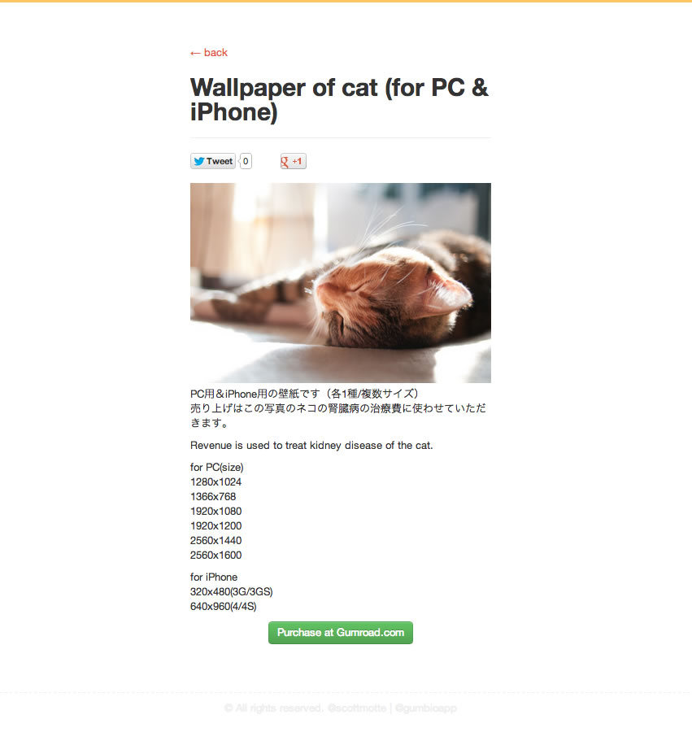
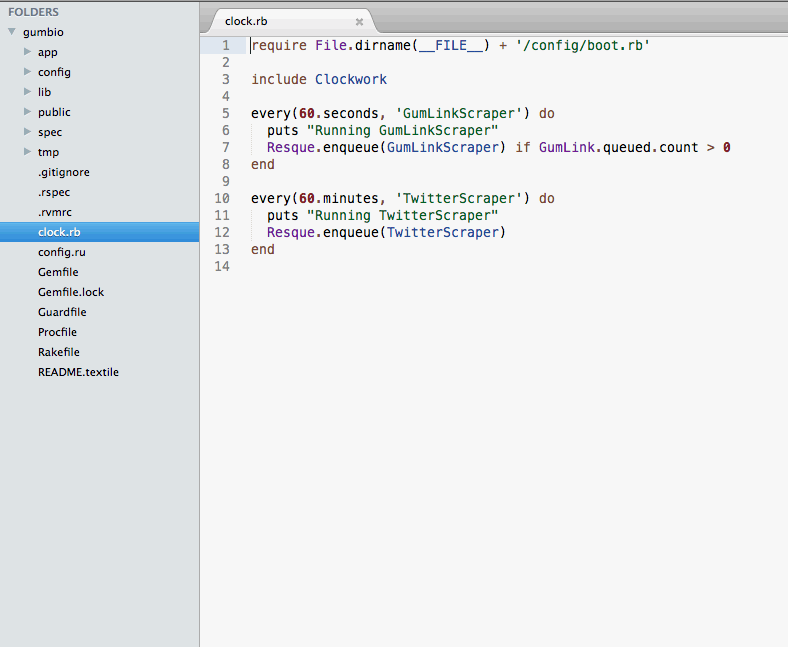
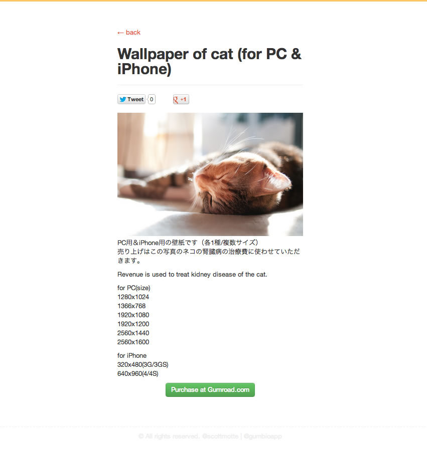
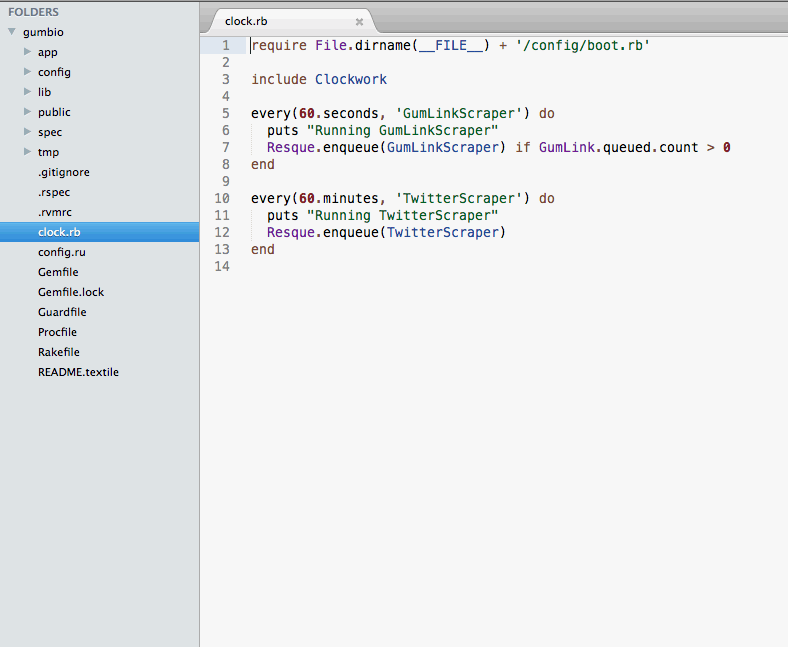

Gumb.io is a gumroad marketplace.
I built Gumb.io over a single weekend. Gumroad had recently launched and I was impressed by it. I felt what it was missing though was a marketplace. I deduced the algorithm that generated the unique Gumroad links, and wrote a script to scrape most of the content on Gumroad.com into Gumb.io. As a result, Gumb.io became the world's first searchable Gumroad marketplace.
After another weekend of hacking on it, I decided not to continue improving the project. It is still live, but I will probably discontinue it very soon.
Technologies include: